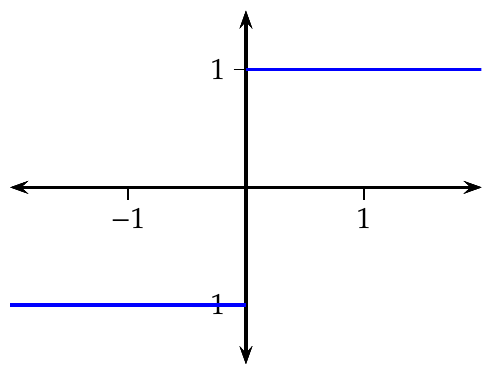
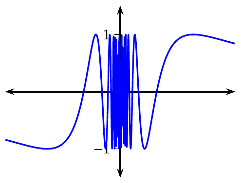
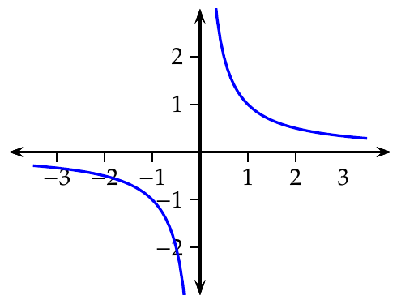
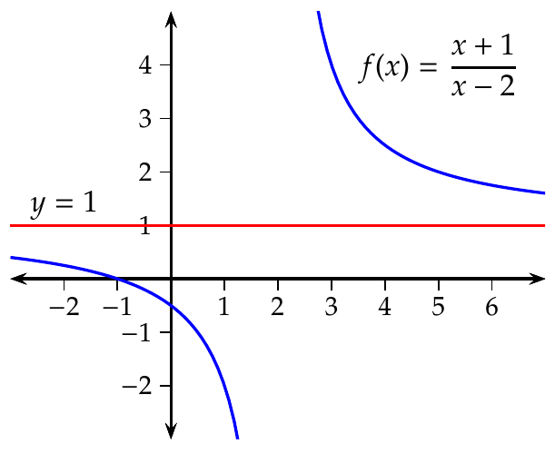
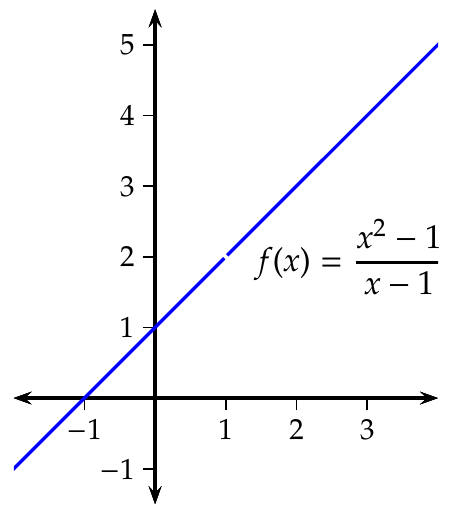
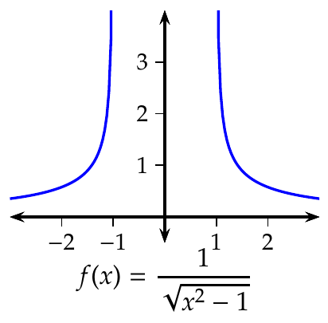

Límites y continuidad El concepto de límite Aproximación al concepto de límite El concepto de límite está ligado al de tendencia. Decimos que $x$ tiende a un valor $a$, y lo escribimos $x\rightarrow a$, si se pueden tomar valores de $x$ tan próximos a $a$ como se quiera, pero sin llegar a valer $a$. Si la aproximación es por defecto (con valores menores que $a$) se dice que $x$ tiende a $a$ por la izquierda, y se escribe $x\rightarrow a^-$, y si es por exceso (con valores mayores que $a$) se dice que $x$ tiende a $a$ por la derecha, y se escribe $x\rightarrow a^+$. Cuando la variable $x$ de una función $f$ tiende a un valor $a$, cabe preguntarse si sus imágenes mediante $f$ tienden a otro valor concreto: Si $f(x)$ tiende a un valor $l$ cuando $x$ tiende a $a$, se dice que $l$ es el límite de $f(x)$ cuando $x\rightarrow a$, y se escribe $$\lim_{x\rightarrow a}f(x)=l.$$ Límites laterales Si $f(x)$ tiende a $l$ cuando $x$ tiende a $a$ por la izquierda, entonces se dice que $l$ es el límite por la izquierda de $f(x)$ cuando $x\rightarrow a^-$, y se escribe $$\lim_{x\rightarrow a^-}f(x)=l.$$ Si $f(x)$ tiende a $l$ cuando $x$ se aproxima a $a$ por exceso, entonces se dice que $l$ es el límite por la derecha de $f(x)$ cuando $x\rightarrow a^-$, y se escribe $$\lim_{x\rightarrow a^+}f(x)=l.$$ Ejemplo. Consideremos la función $f(x)=x^2$ y veamos que pasa cuando $x\rightarrow 2$: $$ \begin{array}{c} \underbrace{\begin{array}{ccc} \textrm{Aproximación por defecto} & \qquad & \textrm{Aproximación por exceso}\newline \begin{array}{|l|l|} \hline x & f(x)=x^2 \newline \hline\hline 1.9 & 3.61 \newline \hline 1.99 & 3.9601 \newline \hline 1.999 & 3.996001 \newline \hline 1.9999 & 3.99960001 \newline \hline \end{array} & & \begin{array}{|l|l|} \hline x & f(x)=x^2 \newline \hline\hline 2.1 & 4.41 \newline \hline 2.01 & 4.0401 \newline \hline 2.001 & 4.004001 \newline \hline 2.0001 & 4.00040001 \newline \hline \end{array}\newline \Downarrow & & \Downarrow\newline \lim_{x\rightarrow 2^-}x^2=4 & & \lim_{x\rightarrow 2^+}x^2=4 \end{array}}\newline \Downarrow\newline \lim_{x\rightarrow 2}x^2=4 \end{array} $$ Límites que no existen (I) Si la función no está definida entorno a un punto, entonces no existe el límite en dicho punto Ejemplo. Consideremos la función $f(x)=\dfrac{1}{\sqrt{x^2-1}}$ y veamos que pasa cuando $x\rightarrow 0$: $$ \begin{array}{c} \underbrace{\begin{array}{ccc} \textrm{Por la izquierda} & \qquad & \textrm{Por la derecha }\newline \begin{array}{|l|l|} \hline x & f(x) \newline \hline\hline -0.1 & \textrm{No exite} \newline \hline -0.01 & \textrm{No existe} \newline \hline -0.001 & \textrm{No existe} \newline \hline \end{array} & & \begin{array}{|l|l|} \hline x & f(x) \newline \hline\hline 0.1 & \textrm{No existe} \newline \hline 0.01 & \textrm{No existe} \newline \hline 0.001 & \textrm{No existe} \newline \hline \end{array}\newline \Downarrow & & \Downarrow\newline \displaystyle \textrm{No existe } \lim_{x\rightarrow 0^-}\frac{1}{\sqrt{x^2-1}} & & \displaystyle \textrm{No existe } \lim_{x\rightarrow 0^+}\frac{1}{\sqrt{x^2-1}} \end{array}}\newline \Downarrow\newline \displaystyle \textrm{No existe }\lim_{x\rightarrow 0}\frac{1}{\sqrt{x^2-1}} \end{array}$$ Límites que no existen (II) Cuando los límites laterales no coinciden entonces no existe el límite Ejemplo. Consideremos la función $f(x)=\dfrac{\lvert x\rvert}{x}$ y veamos que pasa cuando $x\rightarrow 0$: $$\begin{array}{c} \underbrace{\begin{array}{ccc} \textrm{Por la izquierda} & \qquad & \textrm{Por la derecha }\newline \begin{array}{|l|l|} \hline x & f(x) \newline \hline\hline -0.1 & -1 \newline \hline -0.01 & -1 \newline \hline -0.001 & -1 \newline \hline \end{array} & & \begin{array}{|l|l|} \hline x & f(x) \newline \hline\hline 0.1 & 1 \newline \hline 0.01 & 1 \newline \hline 0.001 & 1 \newline \hline \end{array}\newline \Downarrow & & \Downarrow\newline \displaystyle \lim_{x\rightarrow 0^-}\frac{|x|}{x}=-1 &\neq & \displaystyle \lim_{x\rightarrow 0^+}\frac{|x|}{x}=1 \end{array}}\newline \Downarrow\newline \displaystyle \textrm{No existe }\lim_{x\rightarrow 0}\frac{|x|}{x} \end{array} $$  Límites que no existen (III) A veces, cuando $x\rightarrow a$ los valores de $f(x)$ crecen o decrecen infinitamente y entonces no existe el límite. En este caso se dice que la función diverge y se escribe $$\lim_{x\rightarrow a}f(x)=\pm \infty$$ Ejemplo. Veamos la tendencia de la función $f(x)=\dfrac{1}{x^2}$ cuando $x\rightarrow 0$: $$ \begin{array}{c} \underbrace{\begin{array}{ccc} \textrm{Por la izquierda} & \qquad & \textrm{Por la derecha }\newline \begin{array}{|l|r|} \hline x & f(x) \newline \hline\hline -0.1 & 100 \newline \hline -0.01 & 10000 \newline \hline -0.001 & 1000000 \newline \hline \end{array} & & \begin{array}{|l|r|} \hline x & f(x) \newline \hline\hline 0.1 & 100 \newline \hline 0.01 & 10000 \newline \hline 0.001 & 1000000 \newline \hline \end{array}\newline \Downarrow & & \Downarrow\newline \displaystyle \lim_{x\rightarrow 0^-}\frac{1}{x^2}=+\infty & & \displaystyle \lim_{x\rightarrow 0^+}\frac{1}{x^2}=+\infty \end{array}}\newline \Downarrow\newline \displaystyle \textrm{No existe }\lim_{x\rightarrow 0}\frac{1}{x^2}=\infty \end{array} $$ Límites que no existen (IV) A veces, el límite de un función en un punto puede no existir porque la función oscila rápidamente al acercarnos a dicho punto. Ejemplo. Consideremos la función $f(x)=\operatorname{sen} \dfrac{1}{x}$ y veamos que pasa cuando $x\rightarrow 0$: $$\begin{array}{ccc} \textrm{Por la izquierda} & \qquad & \textrm{Por la derecha }\newline \begin{array}{|l|l|} \hline x & f(x) \newline \hline\hline -0.1 & -0.1736 \newline \hline -0.01 & -0.9848 \newline \hline -0.005 & 0.3420 \newline \hline -0.001 & 0.9848 \newline \hline -0.0005 & 0.3420\newline \hline -0.0001 & 0.9848 \newline \hline \end{array} & & \begin{array}{|l|l|} \hline x & f(x) \newline \hline\hline 0.1 & 0.1736 \newline \hline 0.01 & 0.9848 \newline \hline 0.005 & -0.3420 \newline \hline 0.001 & -0.9848 \newline \hline 0.0005 & -0.3420\newline \hline 0.0001 & -0.9848 \newline \hline \end{array}\newline \Downarrow & & \Downarrow\newline \displaystyle \textrm{No existe }\lim_{x\rightarrow 0^-}\operatorname{sen} \frac{1}{x} & & \displaystyle \textrm{No existe }\lim_{x\rightarrow 0^+}\operatorname{sen} \frac{1}{x} \end{array} $$  Límites en el infinito Si $f(x)$ tiende a $l$ cuando $x$ crece infinitamente, entonces se dice que $l$ es el límite en el infinito de $f(x)$ cuando $x\rightarrow +\infty$, y se escribe $$\lim_{x\rightarrow +\infty}f(x)=l.$$ Si $f(x)$ tiende a $l$ cuando $x$ decrece infinitamente, entonces se dice que $l$ es el límite en el infinito de $f(x)$ cuando $x\rightarrow -\infty$, y se escribe $$\lim_{x\rightarrow -\infty}f(x)=l.$$ Ejemplo. Estudiemos la tendencia de $f(x)=\dfrac{1}{x}$ cuando $x\rightarrow \pm\infty$: $$ \begin{array}{ccc} x\rightarrow +\infty & \qquad & x\rightarrow -\infty\newline \begin{array}{|r|l|} \hline x & f(x)=1/x \newline \hline\hline 1000 & 0.001 \newline \hline 10000 & 0.0001 \newline \hline 100000 & 0.00001 \newline \hline \end{array} & & \begin{array}{|r|l|} \hline x & f(x)=1/x \newline \hline\hline -1000 & -0.001 \newline \hline -10000 & -0.0001 \newline \hline -100000 & -0.00001 \newline \hline \end{array}\newline \Downarrow & & \Downarrow\newline \lim_{x\rightarrow +\infty}\frac{1}{x}=0 & & \lim_{x\rightarrow -\infty}\frac{1}{x}=0 \end{array} $$  Definición de límite Definición - Límite de una función en un punto Se dice que el límite de la función $f$ cuando $x\rightarrow a$ es $l$, y se escribe $$\lim_{x\rightarrow a} f(x) = l$$ si para cualquier valor $\varepsilon>0$ existe un número $\delta>0$ tal que, $|f(x)-l|<\varepsilon$ siempre que $0<|x-a|<\delta$. Definición de límite en el infinito Definición - Límite de una función en el infinito Se dice que el límite de la función $f$ cuando $x\rightarrow +\infty$ es $l$, y se escribe $$\lim_{x\rightarrow +\infty} f(x) =l$$ si para cualquier valor $\varepsilon>0$ existe un número $\delta>0$ tal que, $\lvert f(x)-l\rvert <\varepsilon$ siempre que $x>\delta$. Se dice que el límite de la función $f$ cuando $x\rightarrow -\infty$ es $l$, y se escribe $$\lim_{x\rightarrow -\infty} f(x) =l$$ si para cualquier valor $\varepsilon>0$ existe un número $\delta<0$ tal que, $\lvert f(x)-l\rvert <\varepsilon$ siempre que $x<\delta$. Álgebra de límites Dadas dos funciones $f(x)$ y $g(x)$, tales que existe $$\lim_{x\rightarrow a}f(x)$$ y $$\lim_{x\rightarrow a}g(x)$$, entonces se cumple que $$ \lim_{x\rightarrow a}c f(x)=c\lim_{x\rightarrow a}f(x)$$, siendo $c$ constante. $$ \lim_{x\rightarrow a}(f(x)\pm g(x))=\lim_{x\rightarrow a}f(x)\pm \lim_{x\rightarrow a}g(x).$$ $$ \lim_{x\rightarrow a}(f(x)\cdot g(x))=\lim_{x\rightarrow a}f(x)\cdot \lim_{x\rightarrow a}g(x).$$ $$ \lim_{x\rightarrow a}\frac{f(x)}{g(x)}=\frac{\displaystyle \lim_{x\rightarrow a}f(x)}{\displaystyle \lim_{x\rightarrow a}g(x)}$$ si $$\lim_{x\rightarrow a}g(x)\neq 0.$$ Límites de las funciones elementales Funciones polinómicas. Si $f$ es un polinomio, entonces existe el límite de $f$ en cualquier punto $a\in \mathbb{R}$ y $\lim_{x\rightarrow a}f(x)=f(a)$. Funciones racionales. Si $f(x)=\dfrac{p(x)}{q(x)}$ con $p(x)$ y $q(x)$ dos polinomios, entonces existe el límite de $f$ en cualquier punto $a\in \mathbb{R}$ que no sea una raíz de $q(x)$, y $\lim_{x\rightarrow a}f(x)=f(a)$. Si $a$ es una raíz de $q(x)$ entonces el límite puede existir o no. Funciones potenciales. Si $f(x)=x^r$ con $r\in \mathbb{R}$, entonces existe el límite de $f$ en cualquier punto $a$ tal que exista un intervalo $(a-\delta,a+\delta)\subset \textrm{Dom}(f)$ para algún $\delta >0$, y en ese caso, $\lim_{x\rightarrow a}f(x)=f(a)$. Funciones exponenciales. Si $f(x)=c^x$ con $c\in \mathbb{R}$ entonces existe el límite de $f$ en cualquier punto $a\in \mathbb{R}$ y$\lim_{x\rightarrow a}f(x)=f(a)$. Funciones logarítmicas. Si $f(x)=\log_cx$ con $c\in \mathbb{R}$, entonces existe el límite de $f$ en cualquier punto $a\in \mathbb{R}^+$ y $\lim_{x\rightarrow a}f(x)=f(a)$. Funciones trigonométricas. Si $f(x)$ es una función trigonométrica, entonces existe el límite de $f$ en cualquier punto $a\in \textrm{Dom}(f)$ y $\lim_{x\rightarrow a}f(x)=f(a)$. Indeterminaciones y su resolución Tipos de indeterminaciones Al calcular límites pueden aparecer las siguientes indeterminaciones: Tipo cociente. Si $\lim_{x\rightarrow a} f(x)=0$ y $\lim_{x\rightarrow a} g(x)=0$, entonces $\dfrac{f(x)}{g(x)}$ presenta una indeterminación del tipo $\dfrac{0}{0}$ cuando $x\rightarrow a$. Si $\lim_{x\rightarrow a} f(x)=\pm\infty$ y $\lim_{x\rightarrow a} g(x)=\pm\infty$, entonces $\dfrac{f(x)}{g(x)}$ presenta una indeterminación del tipo $\pm\dfrac{\infty}{\infty}$ cuando $x\rightarrow a$. Tipo producto. Si $\lim_{x\rightarrow a} f(x)=0$ y $\lim_{x\rightarrow a} g(x)=\pm\infty$, entonces $f(x)\cdot g(x)$ presenta una indeterminación del tipo $0\cdot \pm\infty$ cuando $x\rightarrow a$. Tipo potencia. Si $\lim_{x\rightarrow a} f(x)=1$ y $\lim_{x\rightarrow a} g(x)=\infty$, entonces $f(x)^{g(x)}$ presenta una indeterminación del tipo $1^\infty$ cuando $x\rightarrow a$. Si $\lim_{x\rightarrow a} f(x)=0$ y $\lim_{x\rightarrow a} g(x)=0$, entonces $f(x)^{g(x)}$ presenta una indeterminación del tipo $0^0$ cuando $x\rightarrow a$. Si $\lim_{x\rightarrow a} f(x)=\infty$ y $\lim_{x\rightarrow a} g(x)=0$, entonces $f(x)^{g(x)}$ presenta una indeterminación del tipo $\infty^0$ cuando $x\rightarrow a$. Tipo diferencia. Si $\lim_{x\rightarrow a} f(x)=\infty$ y $\lim_{x\rightarrow a} g(x)=\infty$, entonces $f(x)-g(x)$ presenta una indeterminación del tipo $\infty-\infty$ cuando $x\rightarrow a$. Resolución de una indeterminación de tipo cociente Existen diferentes técnicas para resolver una indeterminación del tipo $\dfrac{0}{0}$ o $\dfrac{\infty}{\infty}$: Factorización de polinomios en funciones racionales. División por el términos de mayor orden en funciones racionales. Infinitésimos equivalentes. Regla de L’Hôpital. Factorización de polinomios en funciones racionales Si $f(x)=\dfrac{p(x)}{q(x)}$ es una función racional que presenta una indeterminación de tipo cociente cuando $x\rightarrow a$, y $a$ es una raíz de $p(x)$ y $q(x)$, se puede resolver la indeterminación factorizando los polinomios y simplificando. Ejemplo. La función $f(x)=\dfrac{x^3-3x+2}{x^4-4x+3}\rightarrow \dfrac{0}{0}$ cuando $x\rightarrow 1$. Para resolver la indeterminación factorizamos los polinomios $$ \begin{aligned} x^3-3x+2 &= (x+2)(x-1)^2,\newline x^4-4x+3 &= (x^2+2x+3)(x-1)^2. \end{aligned} $$ Como el factor $(x-1)^2$ es común, podemos simplificar la función en el cálculo del límite: $$ \lim_{x\rightarrow 1}\frac{x^3-3x+2}{x^4-4x+3} = \lim_{x\rightarrow 1}\frac{(x+2)(x-1)^2}{(x^2+2x+3)(x-1)^2} = \lim_{x\rightarrow 1}\frac{(x+2)}{(x^2+2x+3)} =\frac{3}{6}=0.5. $$ 1 División por el término de mayor orden en funciones racionales Si $f(x)=\dfrac{p(x)}{q(x)}$ es una función racional que presenta una indeterminación de tipo cociente cuando $x\rightarrow \pm\infty$, entonces se puede resolver dividendo $p(x)$ y $q(x)$ por el término de mayor grado de ambos polinomios. Ejemplo. La función $f(x)=\dfrac{x^3-3x+2}{x^4-4x+3}\rightarrow \dfrac{\infty}{\infty}$ cuando $x\rightarrow \infty$. Para resolver la indeterminación dividimos numerador y denominador por $x^4$ que es el término de mayor grado: $$ \lim_{x\rightarrow \infty}\frac{x^3-3x+2}{x^4-4x+3} = \lim_{x\rightarrow \infty}\frac{\frac{x^3-3x+2}{x^4}}{\frac{x^4-4x+3}{x^4}} = \lim_{x\rightarrow \infty}\frac{\frac{1}{x}-\frac{3}{x^3}+\frac{2}{x^4}}{1-\frac{4}{x^3}+\frac{3}{x^4}} =\frac{0}{1}=0 $$ En general, si $f(x)=\dfrac{a_0+a_1x+\cdots a_nx^n}{b_0+b_1x+\cdots b_mx^m}$, entonces: Si $n>m$ entonces $\lim_{x\rightarrow \pm \infty}f(x)=\pm\infty$. Si $n<m$ entonces $\lim_{x\rightarrow \pm \infty}f(x)=0$. Si $n=m$ entonces $\lim_{x\rightarrow \pm \infty}f(x)=\dfrac{a_n}{b_m}$. Infinitésimos equivalentes Definición - Infinitésimos equivalentes. Si $f(x)\rightarrow 0$ y $g(x)\rightarrow 0$ cuando $x\rightarrow a$, entonces se dice que $f$ y $g$ son infinitésimos equivalentes cuando $x\rightarrow a$ si se cumple $$\lim_{x\rightarrow a}\frac{f(x)}{g(x)}=1.$$ En tal caso se escribe $f(x)\approx g(x)$ cuando $x\rightarrow a$. Si $f(x)\approx g(x)$ cuando $x\rightarrow a$ entonces $f(x)$ y $g(x)$ son magnitudes equivalentes cuando $x\rightarrow a$. Infinitésimos equivalentes cuando $x\rightarrow 0$: $$ \begin{array}{c} \operatorname{sen} x \approx x \approx \operatorname{tg} x\newline 1-\cos x \approx \dfrac{x^2}{2}\newline \operatorname{arctg} x \approx x\newline e^x-1 \approx x\newline \log(1+x) \approx x\newline \end{array} $$ A veces se puede resolver una indeterminación cuando $x\rightarrow a$ sustituyendo cualquier subexpresión de la función por un infinitésimo equivalente cuando $x\rightarrow a$. Ejemplo. La función $f(x)=\dfrac{\operatorname{sen} x(1- \cos x)}{x^3}\rightarrow \dfrac{0}{0}$ cuando $x\rightarrow 0$. Como $\operatorname{sen} x \approx x$ y $1-\cos x\approx \dfrac{x^2}{2}$ cuando $x\rightarrow 0$, para resolver la indeterminación sustituimos $\operatorname{sen} x$ por $x$ y $1-\cos x$ por $\dfrac{x^2}{2}$: $$ \begin{aligned} \lim_{x\rightarrow 0}\frac{\operatorname{sen} x(1- \cos x)}{x^3}&= \lim_{x\rightarrow 0}\dfrac{x\frac{x^2}{2}}{x^3} = \lim_{x\rightarrow 0}\dfrac{\frac{x^3}{2}}{x^3} = \lim_{x\rightarrow 0}\dfrac{1}{2} =0.5. \end{aligned} $$ Regla de L’Hôpital Teorema - Regla de L’Hôpital. Si $\dfrac{f(x)}{g(x)}\rightarrow \dfrac{0}{0}$ o $\dfrac{\infty}{\infty}$ cuando $x\rightarrow a$, entonces si existe el límite de $\dfrac{f’(x)}{g’(x)}$ cuando $x\rightarrow a$ se cumple $$\lim_{x\rightarrow a}\frac{f(x)}{g(x)}=\lim_{x\rightarrow a}\frac{f’(x)}{g’(x)}.$$ Para que exista $\lim_{x\rightarrow a}\dfrac{f’(x)}{g’(x)}$ es necesario que que $f$ y $g$ sean derivables en un entorno de $a$. Ejemplo. Sea $f(x)=\dfrac{\log(x^2-1)}{x+2}\rightarrow \dfrac{\infty}{\infty}$ cuando $x\rightarrow \infty$. Para resolver la indeterminación aplicamos la regla de L’Hôpital: $$ \begin{aligned} \lim_{x\rightarrow \infty}\frac{\log(x^2-1)}{x+2} &= \lim_{x\rightarrow \infty}\frac{\left(\log(x^2-1)\right)’}{\left(x+2\right)’}= \lim_{x\rightarrow \infty}\frac{\frac{2x}{x^2-1}}{1}=\newline &=\lim_{x\rightarrow \infty}\frac{2x}{x^2-1}= \lim_{x\rightarrow \infty}\frac{\left(2x\right)’}{\left(x^2-1\right)’}= \lim_{x\rightarrow \infty}\frac{2}{2x}=0. \end{aligned} $$ Resolución de una indeterminación de tipo producto Si $f(x)\rightarrow 0$ y $g(x)\rightarrow \pm\infty$ cuando $x\rightarrow a$, entonces la indeterminación $f(x)\cdot g(x)\rightarrow 0\cdot \pm\infty$ puede convertirse en una de tipo cociente mediante la transformación: $$f(x)\cdot g(x) = \frac{f(x)}{1/g(x)}\rightarrow \frac{0}{0}.$$ Ejemplo. Sea $f(x)=x^2e^{1/x^2}\rightarrow 0\cdot\infty$ cuando $x\rightarrow 0$. $$ \begin{aligned} \lim_{x\rightarrow 0}x^2e^{1/x^2} &= \lim_{x\rightarrow 0}\frac{e^{1/x^2}}{1/x^2}\rightarrow \frac{\infty}{\infty} \end{aligned} $$ Aplicando ahora la regla de L´Hôpital tenemos: $$ \begin{aligned} \lim_{x\rightarrow 0}\frac{e^{1/x^2}}{1/x^2} &= \lim_{x\rightarrow 0}\frac{\left(e^{1/x^2}\right)’}{\left(1/x^2\right)’} = \lim_{x\rightarrow 0}\frac{e^{1/x^2}\frac{-2}{x^3}}{\frac{-2}{x^3}} = \lim_{x\rightarrow 0}e^{1/x^2}=\infty. \end{aligned} $$ Resolución de una indeterminación de tipo potencia Si $f(x)^{g(x)}$ presenta una indeterminación de tipo potencia cuando $x\rightarrow a$, entonces la indeterminación puede convertirse en una de tipo producto mediante la transformación: $$\exp\left(\log f(x)^{g(x)}\right) = \exp\left(g(x)\cdot \log f(x)\right).$$ Ejemplo. Sea $f(x)=\left(1+\dfrac{1}{x}\right)^{x} \rightarrow 1^\infty$ cuando $x\rightarrow 0$. $$ \begin{aligned} \lim_{x\rightarrow 0}\left(1+\dfrac{1}{x}\right)^{x} &= \lim_{x\rightarrow 0}\exp\left(\log\left(1+\frac{1}{x}\right)^{x}\right) = \exp\left(\lim_{x\rightarrow 0}x\log\left(1+\frac{1}{x}\right)\right) =\newline &= \exp\left(\lim_{x\rightarrow 0}\frac{\log\left(1+\frac{1}{x}\right)}{1/x}\right) \end{aligned} $$ Aplicando ahora la regla de L´Hôpital tenemos: $$ \begin{aligned} \exp\left(\lim_{x\rightarrow 0}\frac{\left(\log\left(1+\frac{1}{x}\right)\right)’}{\left(1/x\right)’}\right) &= \exp\left(\lim_{x\rightarrow 0}\frac{\frac{1}{1+1/x}\frac{-1}{x^2}}{\frac{-1}{x^2}}\right) = \exp\left(\lim_{x\rightarrow 0}\frac{1}{1+\frac{1}{x}}\right)=\exp(1)=e. \end{aligned} $$ Resolución de una indeterminación de tipo diferencia Si $f(x)\rightarrow \infty$ y $g(x)\rightarrow \infty$ cuando $x\rightarrow a$, entonces la indeterminación $f(x)-g(x)$ puede convertirse en una de tipo cociente mediante la transformación: $$f(x)-g(x)=\frac{\frac{1}{g(x)}-\frac{1}{f(x)}}{\frac{1}{f(x)g(x)}}\rightarrow \frac{0}{0}.$$ Ejemplo. Sea $f(x)=\dfrac{1}{\operatorname{sen} x}-\dfrac{1}{x} \rightarrow \infty-\infty$ cuando $x\rightarrow 0$. $$ \begin{aligned} \lim_{x\rightarrow 0} \frac{1}{\operatorname{sen} x}-\frac{1}{x} &= \lim_{x\rightarrow 0} \frac{x-\operatorname{sen} x}{x\operatorname{sen} x} \rightarrow \frac{0}{0}. \end{aligned} $$ Aplicando ahora la regla de L´Hôpital tenemos: $$ \begin{aligned} \lim_{x\rightarrow 0} \frac{x-\operatorname{sen} x}{x\operatorname{sen} x} & = \lim_{x\rightarrow 0} \frac{\left(x-\operatorname{sen} x\right)’}{\left(x\operatorname{sen} x\right)’}= \lim_{x\rightarrow 0} \frac{1-\cos x}{\operatorname{sen} x +x\cos x} = \newline &= \lim_{x\rightarrow 0} \frac{\left(1-\cos x\right)’}{\left(\operatorname{sen} x +x\cos x\right)’} = \lim_{x\rightarrow 0} \frac{\operatorname{sen} x}{\cos x +\cos x-x\operatorname{sen} x}=\newline &= \frac{0}{2}=0. \end{aligned} $$ Asíntotas de una función Una asíntota de una función es una recta a la que tiende la función en el infinito, es decir, que la distancia entre la recta y la función es cada vez menor. Existen tres tipos de asíntotas: Asíntota vertial: $x=a$, Asíntota horizontal: $y=a$, Asíntota oblicua: $y=a+bx$. Asíntotas verticales Definición - Asíntota vertical. Se dice que una recta $x=a$ es una asíntota vertical de una función $f$ si se cumple $$\lim_{x\rightarrow a^-}f(x)=\pm \infty \quad \textrm{o} \quad \lim_{x\rightarrow a^-}f(x)=\pm \infty$$ Las asíntotas verticales deben buscarse en los puntos donde no está definida la función, pero si lo está en las proximidades. Ejemplo. La recta $x=2$ es una asíntota vertical de $f(x)=\dfrac{x+1}{x-2}$ ya que $$\lim_{x\rightarrow 2^-}\frac{x+1}{x-2} =-\infty, \mbox{ y } \lim_{x\rightarrow 2^+}\frac{x+1}{x-2} =\infty.$$ Asíntotas horizontales Definición - Asíntota horizontal. Se dice que una recta $y=a$ es una asíntota horizontal de una función $f$ si se cumple $$\lim_{x\rightarrow +\infty}f(x)=a \quad \textrm{o} \quad \lim_{x\rightarrow \infty}f(x)=a$$ Ejemplo. La recta $y=1$ es una asíntota horizontal de $f(x)=\dfrac{x+1}{x-2}$ ya que $$ \begin{aligned} \lim_{x\rightarrow -\infty}\frac{x+1}{x-2}&= \lim_{x\rightarrow -\infty}1+\frac{3}{x-2} = 1, \textrm{ y}\newline \lim_{x\rightarrow +\infty}\frac{x+1}{x-2}&= \lim_{x\rightarrow +\infty}1+\frac{3}{x-2} = 1. \end{aligned} $$  Asíntotas oblicuas Definición - Asíntota oblicua. Se dice que una recta $y=a+bx$ es una asíntota oblicua de una función $f$ si se cumple $$\lim_{x\rightarrow \pm\infty}\frac{f(x)}{x}=b \quad \textrm{y} \quad \lim_{x\rightarrow \pm\infty}f(x)-bx=a.$$ Ejemplo. La recta $y=x+1$ es una asíntota oblicua de $f(x)=\dfrac{x^2}{x-1}$ ya que $$ \begin{aligned} \lim_{x\rightarrow \pm\infty}\frac{\frac{x^2}{x-1}}{x}&= \lim_{x\rightarrow \pm\infty}\frac{x^2}{x^2-x} = 1, \textrm{ y}\newline \lim_{x\rightarrow \pm\infty}\frac{x^2}{x-1}-x &= \lim_{x\rightarrow \pm\infty}1+\frac{x}{x-1} = 1 \end{aligned} $$ Continuidad Definición - Función continua en un punto. Se dice que una función $f$ es continua en el punto $a$ si $$\lim_{x\rightarrow a}f(x)=f(a).$$ De esta definición se deducen tres condiciones necesarias para la continuidad: $f(a)\in \operatorname{Dom}(f)$. Existe $ \lim_{x\rightarrow a}f(x)$. $ \lim_{x\rightarrow a}f(x)=f(a)$. Si se rompe alguna de estas condiciones, se dice que la función presenta una discontinuidad en $a$. Definición - Función continua en un intervalo. Se dice que una función $f$ es continua en un intervalo si lo es en cada uno de los puntos del intervalo. La gráfica de una función continua en un intervalo puede dibujarse sin levantar el lápiz. Tipos de discontinuidades Dependiendo de la condición de continuidad que se rompa, existen distintos tipos de discontinuidades: Discontinuidad evitable. Discontinuidad de 1ª especie de salto finito. Discontinuidad de 1ª especie de salto infinito. Discontinuidad de 2ª especie. Discontinuidad evitable Definición - Discontinuidad evitable. Se dice que una función $f$ tiene una discontinuidad evitable en el punto $a$ si existe el límite de $f(x)$ cuando $x\rightarrow a$ pero $\displaystyle \lim_{x\rightarrow a}f(x)\neq f(a)$. Ejemplo. La función $f(x)=\dfrac{x^2-1}{x-1}$ tiene una discontinuidad evitable en $x=1$ ya que la función no está definida en $x=1$ pero $$\lim_{x\rightarrow 2}\frac{x^2-1}{x-1} = \lim_{x\rightarrow 2}x+1=2.$$  Discontinuidad de 1ª especie de salto finito Definición - Discontinuidad de 1ª especie de salto finito. Se dice que una función $f$ tiene una discontinuidad de 1ª especie de salto finito en el punto $a$ si existen los límites laterales de $f(x)$ cuando $x\rightarrow a$ pero $$\lim_{x\rightarrow a^-}f(x)\neq \lim_{x\rightarrow a^+}f(x).$$ A la diferencia entre ambos límite se le lama salto de la discontinuidad. Ejemplo. La función $f(x)=\dfrac{\lvert x\rvert}{x}$ tiene una discontinuidad de 1ª especie de salto finito en $x=0$ ya que $$ \begin{aligned} \lim_{x\rightarrow 0^-}\frac{|x|}{x}&= -1\newline \lim_{x\rightarrow 0^+}\frac{|x|}{x}&= 1 \end{aligned} $$ Salto $= 1-(-1)=2$. Discontinuidad de 1ª especie de salto infinito Definición - Discontinuidad de 1ª especie de salto infinito. Se dice que una función $f$ tiene una discontinuidad de 1ª especie de salto infinito en el punto $a$ si $$\lim_{x\rightarrow a^-}f(x)=\pm\infty \quad \textrm{o} \quad \lim_{x\rightarrow a^+}f(x)=\pm\infty.$$ Si $f$ tienen una discontinuidad de 1ª especie de salto infinito en un punto $a$, entonces $f$ tienen una asíntota vertical $x=a$. Ejemplo. La función $f(x)=e^{1/x}$ tiene una discontinuidad de 1ª especie de salto infinito en $x=0$ ya que $$ \begin{aligned} \lim_{x\rightarrow 0^-}e^{1/x}&= 0\newline \lim_{x\rightarrow 0^+}e^{1/x}&= \infty \end{aligned} $$ Discontinuidad de 2ª especie Definición - Discontinuidad de 2ª especie. Se dice que una función $f$ tiene una discontinuidad de 2ª especie en el punto $a$ si no existe alguno de los límites laterales y tampoco se trata de una discontinuidad de 1ª especie de salto infinito. Normalmente la discontinuidades de 2ª especie se dan en puntos donde la función no definida en sus proximidades. Ejemplo. La función $f(x)=\dfrac{1}{\sqrt{x^2-1}}$ tiene una discontinuidad de 2ª especie en $x=1$ ya que $$ \begin{aligned} & \lim_{x\rightarrow 1^-}\frac{1}{\sqrt{x^2-1}} \textrm{ no existe} \newline & \lim_{x\rightarrow 1^+}\frac{1}{\sqrt{x^2-1}}=\infty \end{aligned} $$  Notas Se pude simplificar porque aunque $x\rightarrow 1$, $x\neq 1$ y por tanto el denominador no se anula. ↩︎ Límite Asíntota Continuidad Anterior Funciones elementales Siguiente Cálculo diferencial en una variable